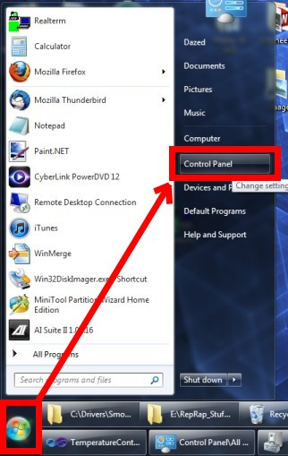
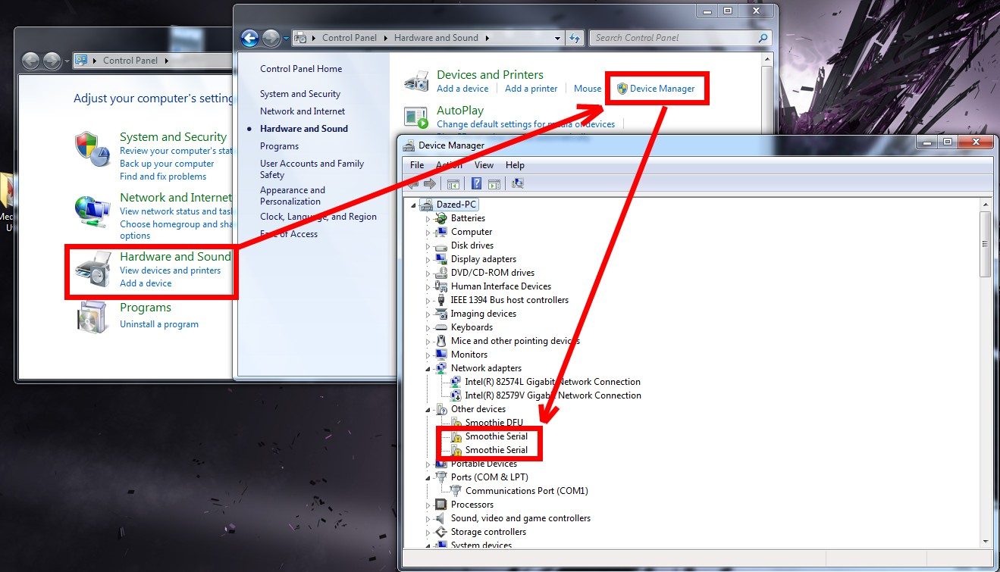
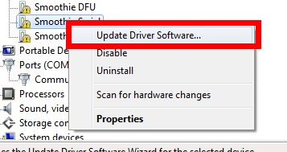
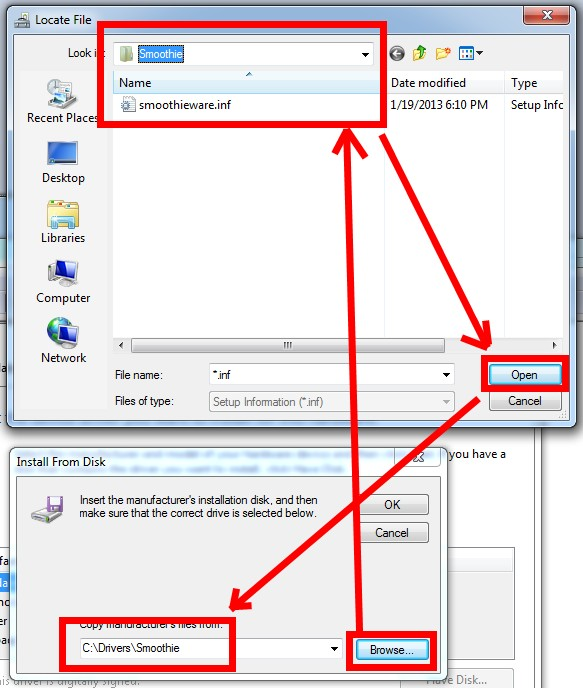
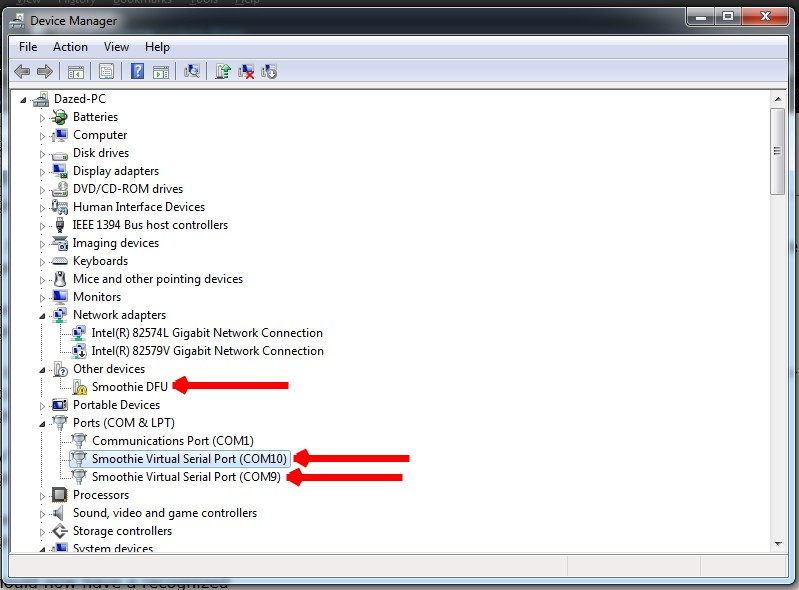

If you run Windows you will need to install drivers to use the virtual serial over USB interface.
Installers
- Windows 2000/Vista/7/8 64bit/32bit: smoothieware-usb-driver-v1.1.exe
Note: Windows 8.1 is known to not like the new driver. Please use the v1.0 driver found below with Windows 8.1 for now.
Using the installers
Download the installer and run it. After that Smoothieboard's usb serial should be recognized automatically.
New in v1.1:
- support for second usb serial port (not compatible with having usb mass storage disabled)
- removed the "!" from the Smoothie DFU device in Windows Device Manager
Windows 10
There is no need to install the drivers on Windows 10, it should all work out of the box. In fact installing the drivers on Windows 10 may cause trouble.
Driver files
- Windows 2000/Vista/7/8 64bit/32bit: smoothieware-windows-signeddriver-v1.0.zip
- Windows 8.1: smoothieware-windows-signeddriver-v1.1.zip
How to install the driver files manually
This is just in case the installer doesn't work, or one is running Vista. The installer is new and has not received much testing so if it didn't work for you please let me know at moc.kcolcrebu|kram#moc.kcolcrebu|kram.
Download the driver files zip and unzip it somewhere. You can use whatever you like so long as you remember it later. The Smoothie sdcard might be a convenient place in case you end up needing the driver in the future.
Click the "start" button and pull up the control panel. From there, we want to open the device manager. Now we need to locate the device to install. If you are using an old firmware you may find an unknown "CDCMSC DEVICE". If you are using a recent version of Smoothieware you may find up to two "Smoothie Serial" devices. Here is an example of what you might see on a recent firmware:Right-click the first one and select "Update Driver Software"
Find where you unzipped the driver to
You should now have a recognized "Smoothie Virtual Serial Port". You might have two of them if that option is enabled in config. Note that your com ports might be different numbers (mine are 9 and 10). The port numbering can be changed through the advanced port properties, but you shouldn't really need to do that. Also note that "smoothie DFU" is still unrecognized. This is fine. You can ignore that.

Does none of this work for you?
There are some windows machines that do not seem to like any of these drivers. These problems do not seem tied to a specific version of Windows. In order to find the cause we would appreciate submissions of hardware information from affected machines. If you have a machine that does not like these drivers please complete the steps found on the How to submit Windows System Information page. Hopefully this will help us identify a pattern to the problem which could help us come up with a solution.